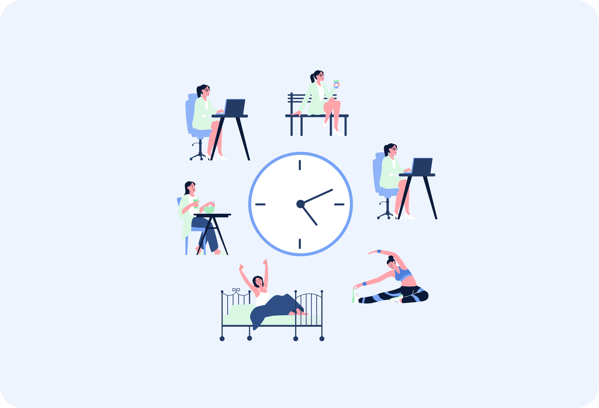

My Day To Day
My schedule can vary greatly depending on more factors than I can count. Things like pending assignments, friends and family, personal well-being, creative pursuits, and more can all cause a drastic change in how my day is structured. Currently, I aim to sleep 8 hours each night, study for at least 4, and keep a consistent flow of recreational activities to avoid burnout.
Balancing a rigorous undergraduate schedule requires time management, intentional pacing, and structured routines. College requires me to navigate things like complex coursework, fostering personal relationships, and maintaining upkeep of my space and body. Thus, structuring my day effectively is essential to maintaining both productivity and mental well-being. My daily schedule is currently designed to optimize cognitive focus during peak energy hours while ensuring adequate time for rest, physical activity, and creative endeavors. Viewing my daily routine akin to an empirical dataset helps to better reflect on my habits.

The breakdown below outlines how a typical weekday of mine might unfold. Using a list and pie chart visualization, I can easily parse at a glance what my time is going towards. By analyzing these time blocks, I can refine my productivity workflow and dedicate consistent hours toward my long-term goals.
Approximate Hourly Breakdown
- 12 am - 8 am: Sleep (8 hours)
- 8 am - 9 am: Wake Up Preparation (1 hour)
- 9 am - 11 am: Class (2 hours)
- 11 am - 12 pm: Free Time (1 hour)
- 12 pm - 1 pm: Lunch (1 hour)
- 1 pm - 2 pm: Class (1 hour)
- 2 pm - 4 pm: Study (2 hours)
- 4 pm - 6 pm: Free Time (2 hours)
- 6 pm - 8 pm: Study (2 hours)
- 8 pm - 9 pm: Dinner (1 hour)
- 9 pm - 11 pm: Free Time (2 hours)
- 11 pm - 12 am: Sleep Preparation (1 hour)